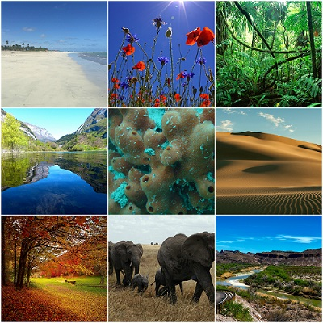
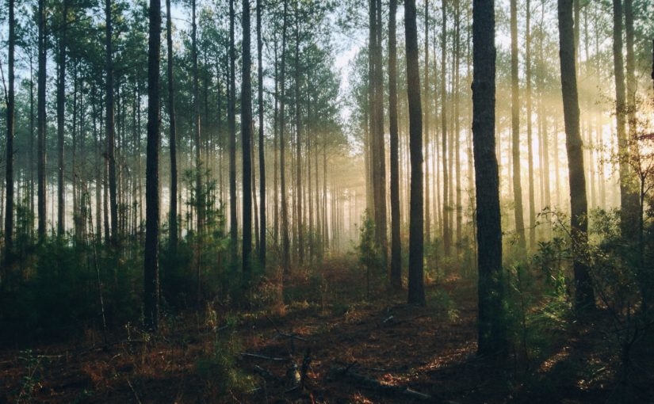

Tundra |
Taiga |
Bosques templados |
Pastizales |
Desiertos |
El ecosistema es el conjunto de especies de un área determinada que interactúan entre ellas y con su ambiente abiótico; mediante procesos como la depredación, el parasitismo, la competencia y la simbiosis, y con su ambiente al desintegrarse y volver a ser parte del ciclo de energía y de nutrientes.

Tundra
Se cree que la tundra es el más joven de todos los biomas del mundo, formándose hace solo 10.000 años. Aproximadamente el 20% o de la superficie terrestre entra en esta categoría. Encontrarás la tundra a lo largo de las regiones costeras del Ártico, una combinación de aire polar y las masas de aire ártico dominan en este bioma, donde prevalece un invierno largo con frio intenso. El verano en este bioma es corto y leve, y la mayoría de los expertos no lo ven como una verdadera temporada de verano

Taiga
La taiga es un bioma con inviernos largos y fríos, sus veranos son cortos y relativamente poco calientes. Las masas de aire frío ártico se mueven con rapidez en estos biomas, y la temperatura media en verano es de 64 grados a 72 grados Fahrenheit, sin embargo, en los meses de invierno pueden ser de -14 grados. La taiga es el bioma terrestre más grande del mundo, cubriendo el 27% de la superficie del planeta.

Bosques templados
Son comunidades dominadas por árboles altos mayormente pinos y encinos acompañados por otras varias especies habitan en zonas montañosas con clima templado a frío. México contiene el 50% (50 especies) de especies de pinos del mundo y cerca del 33% (200 especies) de encinos. Se estima que los bosques templados contienen cerca de 7,000 especies de plantas. A pesar de que la mezcla de especies puede variar entre uno o varios pinos y algunos encinos, son comunidades siempre verdes. Existen otras variantes donde dominan algunas otras coníferas, como los bosques de oyamel, los de ayarín o pinabete y otros.

Pastizales
A lo largo de ciertas áreas de América del Norte y Eurasia se encuentran los biomas de praderas o pastizales, en estos lugares existen montañas que evitan que las masas de aire del océano afecten a estas zonas, como resultado, el aire polar puede llegar a ser dominante, dando lugar a unas temperaturas más frías en los meses de invierno. Sin embargo, en el verano, la masa de aire continental es dominante, provocando lluvias durante estos meses.
En las praderas también hay períodos largos de sequía, esto puede permitir que los incendios estallen en estos biomas, la combinación de sequía e incendios le impide a este bioma convertirse en bosque. Los incendios no destruyen la hierba, las cuales crecen desde la parte inferior de sus tallos, por lo tanto, puede continuar creciendo aun cuando la parte superior ha sido chamuscada por el fuego.
Desiertos
El desierto es un bioma extremadamente caliente y seco, se encuentran en las latitudes bajas, entre el trópico de Cáncer y el Trópico de Capricornio. Ocurren vientos suaves a menudo, que evaporan cualquier tipo de humedad que normalmente pueda desarrollarse. El calor es seco y hace que sea difícil para muchos tipos de plantas o animales poder sobrevivir en estos biomas. Aproximadamente el 20% de la Tierra entra en esta categoría.